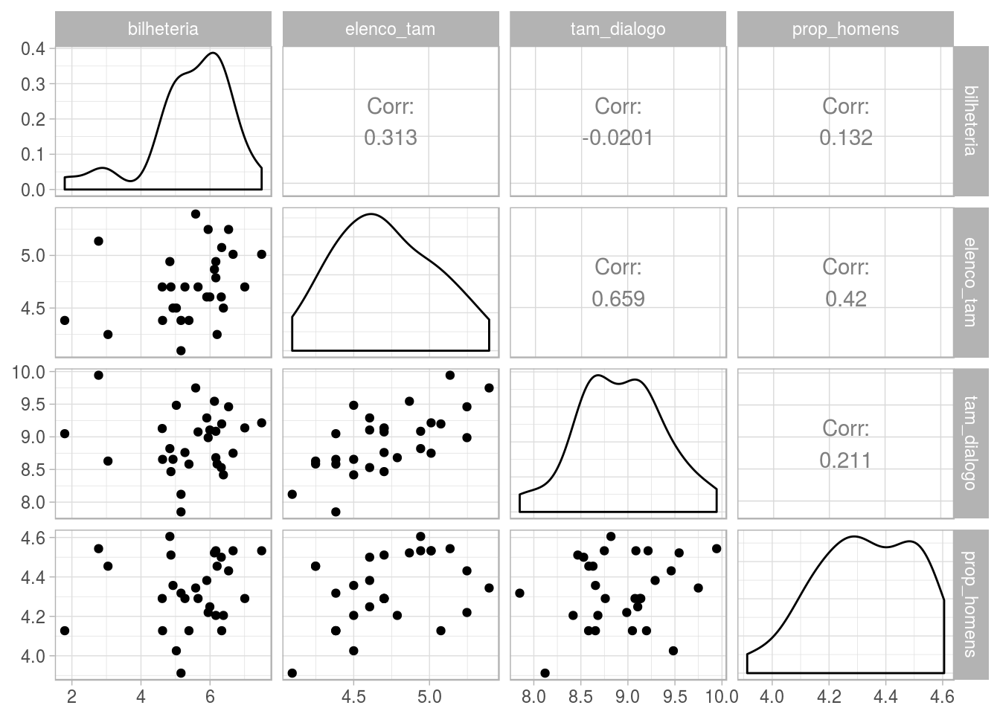
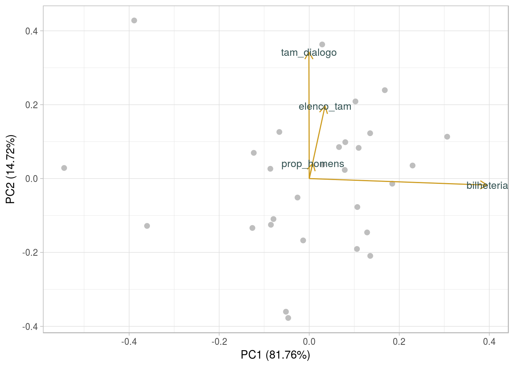
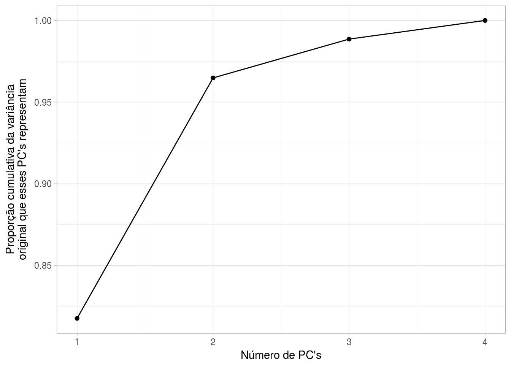
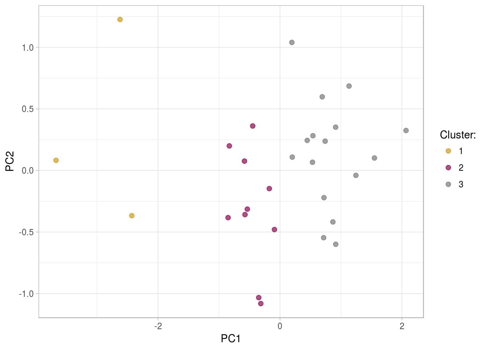
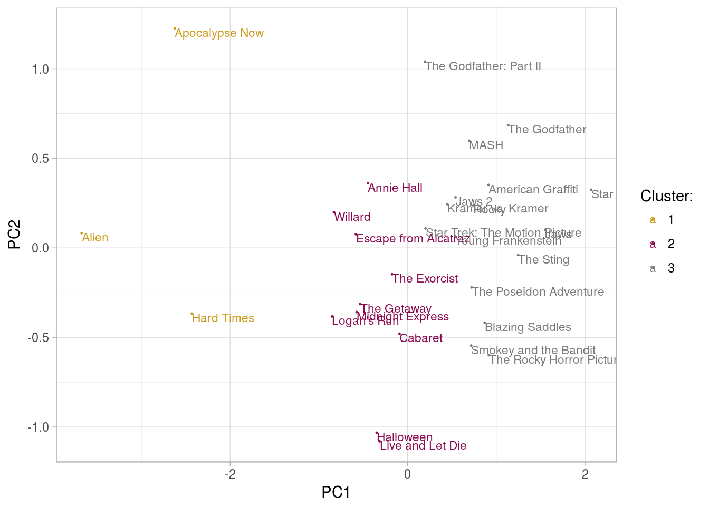
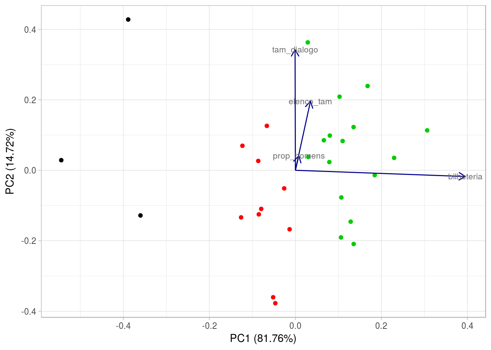

Ítalo Batista
library(tidyverse, warn.conflicts = F)library(rvest)
library(plotly)
library(cluster)
library(ggdendro)
library(ggfortify)
library(broom)
library(GGally)
library(reshape2)
library(gridExtra)
library(factoextra)
library(broom)
library(ggfortify, quietly = TRUE)
library(knitr, quietly = TRUE)
library(highcharter)
library(here)
theme_set(theme_light())Esta análise, realizada no contexto da disciplina Análise de Dados 1 (Computação @ UFCG), tem por objetivo identificar agrupamentos em dados sobre quantidade de falas dos personagens de diferentes gêneros em filmes de hollywood. Essa análise serve de mote para trabalharmos com algumas técnicas de agrupamento de múltiplas (> 2) dimensões utilizando técnicas de Redução de dimensionalidade (Análise de Componentes Principais (ACP) ou Principal Component Analysis (PCA)).
Os dados aqui utilizados foram organizados por Matthew Daniels e estão disponíveis aqui. É mesma base de dados que utilizamos na análise anterior! :)
Faremos aqui um recorte no tempo. Analizaremos filmes das décadas de 70 e 80.
Estaremos interessados em analisar os filmes segundo as seguintes características:
Nossa base de dados:
head(d)## # A tibble: 6 x 6
## script_id title bilheteria elenco_tam prop_homens tam_dialogo
## <int> <chr> <int> <int> <dbl> <int>
## 1 1576 Alien 6 8 0.620 8502
## 2 666 American Graffi… 565 16 0.620 9874
## 3 682 Annie Hall 152 9 0.560 13136
## 4 1676 Apocalypse Now 16 17 0.940 20814
## 5 8301 Blazing Saddles 558 10 0.900 5062
## 6 3980 Cabaret 219 8 0.620 5335Cada observação é um filme, que possui um id (script_id), o título do filme (title), bilheteria corrigida (gross), tamanho do elenco (elenco_tam), proporção de homens no elenco (prop_homens), soma do número de palavras ditas por todos as personagens do filme (tam_dialogo).
d %>% select(-title) %>% summary()## bilheteria elenco_tam prop_homens tam_dialogo
## Min. : 6.0 Min. : 6.00 Min. :0.500 Min. : 2566
## 1st Qu.: 138.0 1st Qu.: 9.00 1st Qu.:0.670 1st Qu.: 5591
## Median : 285.0 Median :11.00 Median :0.750 Median : 8004
## Mean : 388.1 Mean :11.72 Mean :0.769 Mean : 8399
## 3rd Qu.: 495.0 3rd Qu.:14.00 3rd Qu.:0.900 3rd Qu.: 9874
## Max. :1798.0 Max. :22.00 Max. :1.000 Max. :20814É possível perceber que as variáveis são bastante assimétricas. Vamos transformá-las de modo a termos um intervalo próximo entre elas, mas preservando proporcionalmente as diferenças entre filmes. Isos nos ajudará a criar melhores visualizações dos grupos.
d.temp = d
d.temp$prop_homens = d.temp$prop_homens * 100
d.temp$elenco_tam = d.temp$elenco_tam * 10
d.scaled = d.temp %>%
select(title, bilheteria, elenco_tam, tam_dialogo, prop_homens) %>%
mutate_each(funs(log), 2:5)Vamos visualizar como os dados transformados se comportam:
d.scaled %>% select(-title) %>% ggpairs()
Como nossos dados contêm poucos filmes (29 apenas), não conseguimos visualizar bem agrupamentos de duas dimensões em vários dos gráficos de dispersão. E apesar de termos 4 variáveis, não conseguimos ver as quatro variáveis para um ponto de uma vez nessa visualização. Nesse sentido, vamos usar redução de dimensionalidade para projetarmos em uma única visualização agrupamentos que considerem as 4 variáveis. Vamos proceder com a técnica PCA, gerando duas variáveis, PC1 e PC2, em que cada uma dessas variáveis é calculada a partir das 4 que tínhamos inicialmente, de modo a identificar grupos de filmes.
pr.out <- prcomp(select(d.scaled, - title))
autoplot(pr.out, data = d, size = 2,
colour = "grey",
loadings = TRUE, loadings.colour = 'goldenrod3',
loadings.label = TRUE,
loadings.label.size = 3.5,
loadings.label.colour='darkslategrey')
Os vetores mostram a relação entre PC1 e PC2 e as variáveis que tínhamos inicialmente. Quanto mais alinhado for o eixo de PC1 e um vetor, maior será a variação nas variáveis dos vetores quando um ponto se mover na direção de PC1 no gráfico.
Por exemplo, tam_dialogo, elenco_tam e prop_homens variam bastante quando um ponto está mais acima ou abaixo no gráfico (direção de PC2), mas não variam muito em função da posição de um ponto no eixo horizontal (direção de PC1). Bilheteria varia principalmente na medida que os pontos estão à esquerda ou à direita no gráfico (PC1).
Sendo assim, por exemplo, os valores mais à esquerda e acima terão valores mais altos de tam_dialogo e elenco_tam, e valores mais baixos de bilheteria.
Outra forma de ver essa mesma informação é vendo PC1 e PC2 como duas funções das 4 variáveis originais:
tidy(pr.out, "variables") %>%
filter(PC <= 2) %>%
spread(column, value)## PC bilheteria elenco_tam prop_homens tam_dialogo
## 1 1 0.99587597 0.0884206 0.02024491 -0.001731297
## 2 2 -0.04445005 0.4938385 0.10343485 0.862234863Os valores na tabela são os coeficientes, e a leitura é que: \(PC1 = 0.99 * bilheteria + 0.08 * elencoTam + 0.02 * propHomens - 0.01 * tamDialogo\). Isso significa, por exemplo, que mudar aumentar unidades em bilheteria aumenta PC1 e faz com que um ponto esteja mais à direita no gráfico. Aumentar as outras variáveis influencia muito pouco.
Note que a variávei prop_homens influencia pouco na localização do ponto no gráfico.
Parece não haver grupos bem definidos segundo as características trabalhadas. Vemos que há um filme no canto superior esquerdo, que tem um valor bastante alto para elencon_tam e tam_dialogo e um valor bastante baixo de bilheteria. Há outros dois filmes à esquerda do gráfico, que, portanto, terão valores mais baixos de bilheteria, mas no caso desses dois filmes eles também terão valores mais baixos de elenco_tam, tam_dialogo.
Podemos entender que no geral os filmes, por estarem mais centralizados no gráfico, irão possuir valores semelhantes para tamanho do elenco, para bilheteria, para proporção de homens e para tamanho dos diálogos. Há apenas poucos casos que fogem dessa homogeneidade.
É interessante que a gente consiga quantificar quanta informação perdemos quando formos de muitas dimensões para apenas 2. PCA faz isso comparando a variância acumulada nos PCs que você usar com a variância total existente com todas as variáveis originais nos dados.
Em dados:
tidy(pr.out, "pcs")## PC std.dev percent cumulative
## 1 1 1.2533453 0.81759 0.81759
## 2 2 0.5318673 0.14723 0.96483
## 3 3 0.2136787 0.02376 0.98859
## 4 4 0.1480564 0.01141 1.00000Graficamente:
tidy(pr.out, "pcs") %>%
ggplot(aes(x = PC, y = cumulative)) +
geom_line() +
geom_point() +
labs(x = "Número de PC's",
y = "Proporção cumulativa da variância\noriginal que esses PC's representam")
Portanto, com dois componentes principais conseguimos representar mais de 95% da informação original dos dados. As informações perdidas são poucas e portanto insuficientes para comprometer o uso de PCA para representar as quatro variáveis em apenas duas dimensões.
Vamos utilizar o algoritmo kmeans (leia a publicação anterior, em que agrupamos os filmes utilizando esse algortimo, caso queira saber mais para grupar os filmes segundo essas características.
set.seed(24)
n_clusters = 3
filmes_agrupados = d.scaled %>%
select(-title) %>%
kmeans(centers = n_clusters, nstart = 20)
filmes_transformado_agrupado = filmes_agrupados %>%
augment(d.scaled)Encontrando os componentes:
filmes_pca = d.scaled %>%
column_to_rownames("title") %>%
prcomp(scale = FALSE) O valor dos PCs para cada ponto dos dados originais:
tidy(filmes_pca, "samples") %>%
head()## row PC value
## 1 Alien 1 -3.67414159
## 2 American Graffiti 1 0.91321015
## 3 Annie Hall 1 -0.44774925
## 4 Apocalypse Now 1 -2.62383330
## 5 Blazing Saddles 1 0.86793833
## 6 Cabaret 1 -0.09085796Visualizando:
au <- augment(filmes_pca, data = filmes_transformado_agrupado)
au %>%
ggplot(aes(.fittedPC1, .fittedPC2, color = .cluster)) +
geom_point(size = 2, alpha = .7) +
scale_color_manual(name="Cluster:", values = c("3"="gray48", "1"="goldenrod3", "2"="deeppink4")) +
labs(x = "PC1", y = "PC2")
Indicando o nome dos filmes:
set.seed(24)
au %>%
ggplot(aes(.fittedPC1, .fittedPC2, color = .cluster)) +
geom_point(size = .2) +
geom_text(aes(label = title), vjust = 1, hjust = 0, size = 3) +
scale_color_manual(name="Cluster:", values = c("3"="gray48", "1"="goldenrod3", "2"="deeppink4")) +
labs(x = "PC1", y = "PC2")
Interativo:
p = au %>%
mutate(PC1 = .fittedPC1, PC2 = .fittedPC2) %>%
hchart("scatter", hcaes(x = PC1, y = PC2, group = .cluster)) %>%
hc_tooltip(pointFormat = "<b>{point.title}</b><br>
tam. elenco: {point.elenco_tam:,.2f}<br>
bilheteria {point.bilheteria:,.2f}<br>
prop. homens: {point.prop_homens:,.2f}<br>
tam. dialogo: {point.tam_dialogo:,.2f}")
pIdentificandos os grupos, o grupo 1, BaixaBilheteria, é um grupo menor cuja característica comum é possuir uma bilheteria bem baixa se comparada a de outros filmes da base de dados. O grupo 2, SessaoDaTarde, é constituído por filmes que arriscam menos, no sentido de terem tamanho de elenco, bilheteria e tamanho dos diálogos em valores mais centrais se comparados com o restante da base de dados. O grupo 3, Sucesso, é constituído por filmes de alta bilheteria. Dentre esses filmes, temos os conhecidíssimos The Godfather, The Godfather II, Kramer vs Kramer, Star Trek, Star Wars, entre outros.
Para finalizar, veja a distribuição de grupos orientada pelos vetores que relacionam os PC’s com as variáveis discutidas.
p <- autoplot(filmes_pca,
colour = filmes_agrupados$cluster,
loadings = TRUE, loadings.colour = 'darkblue',
loadings.label = TRUE,
loadings.label.size = 3,
loadings.label.colour='gray41')
p